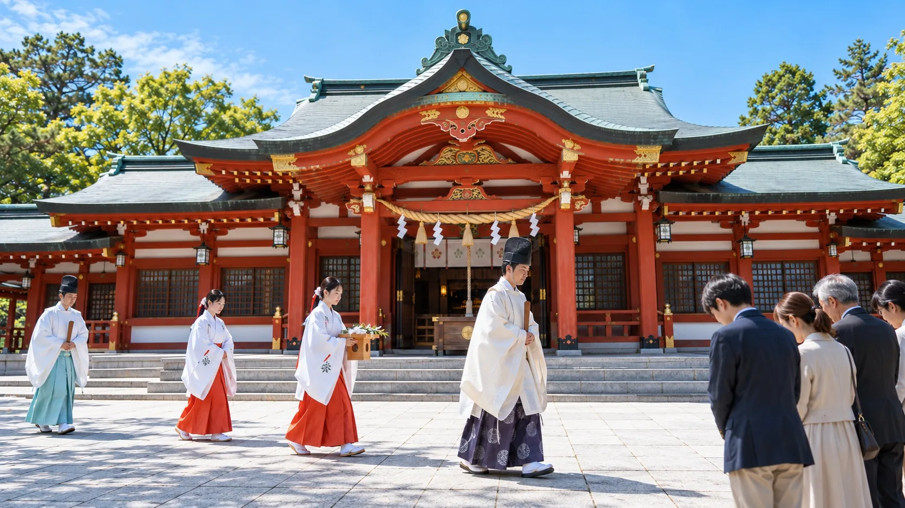
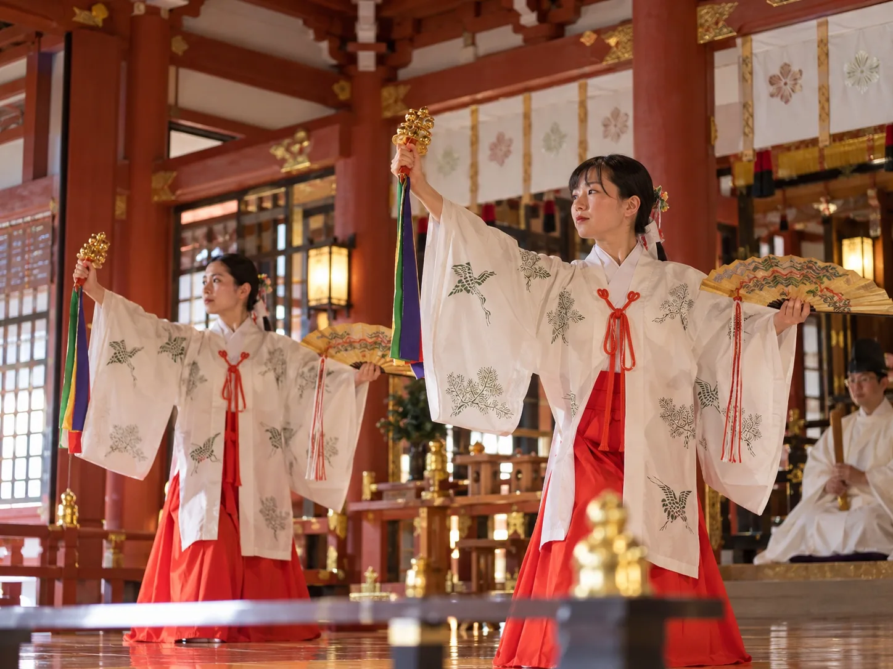

Annual Events年間行事
Seasonal Rituals
季節とともに祈る
赤綴神社では、季節の節目に祭事や例祭を執り行い、地域の安寧と日々の実りを祈ります。


Archives
古文書曝書行事
神社に伝わる古文書や神具の保存状態を確かめる行事です。
古い記録を一つずつ点検し、風を通しながら、後世へ受け継ぐための手入れを行います。
Internal Records
身代わり候補者管理資料
赤綴生活支援会と、指定身代わり制度の運用記録。
DOCUMENT 01
赤綴生活支援会
生活上の困りごとを抱える利用者に対し、相談受付、食事の提供、一時宿泊、就労に向けた情報提供及び生活再建のための継続支援を実施する地域支援組織。
受付・相談室では個別相談と支援計画の確認を行い、必要に応じて宿泊場所や食事を提供。就労準備、日常生活の立て直し、支援後の見守りまでを活動範囲とする。これらの支援活動は記録上も実際に提供されている。


DOCUMENT 02
身代わり候補者管理
- 支援会利用開始
- 身代わり候補者登録
- 儀式の準備期間
（約3年） - 身代わり成立
- 特別祈願への割当
支援会の利用者の一部が、本人に知らされないまま身代わりとして登録されていた。
DOCUMENT 03
指定身代わり制度の終了
指定身代わり制度は2023年に終了。
- 指定身代わり：全員継続不能
- 従来方式：運用停止
- 未処理の災い：残存
古い身代わり制度は破綻し、処理されていない災いだけが残されていました。
DOCUMENT 04
新身代わり運用記録
- 旧身代わり方式：運用停止
- 新身代わり方式：稼働中
- 儀式：厄分けの儀式
- 登録対象：一般参拝者
- 登録方法：鈴鳴らし
- 登録元：Web参拝
- 状態：運用継続中